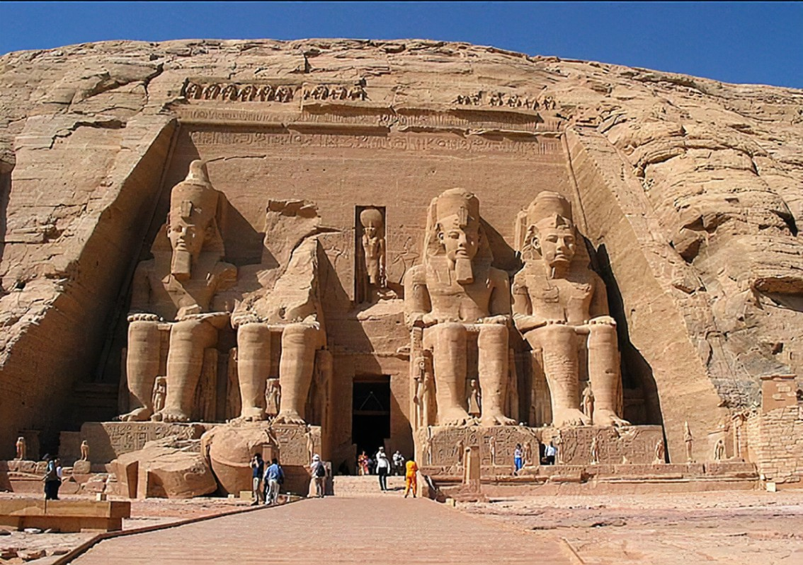
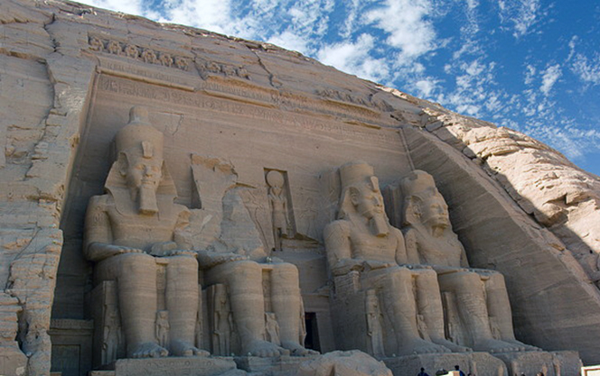
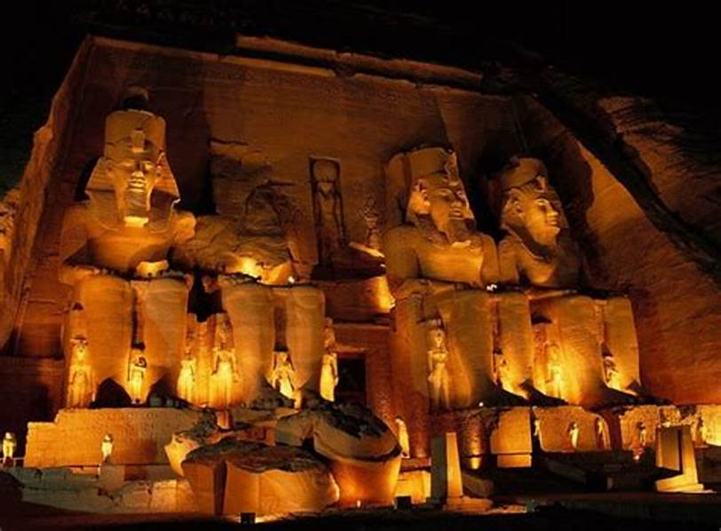
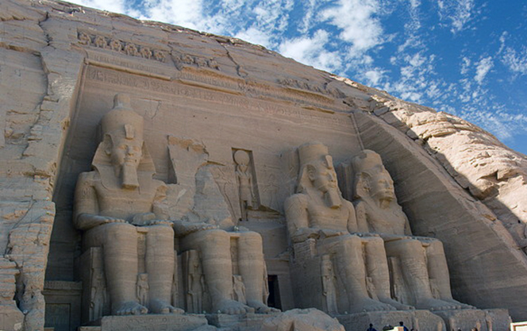
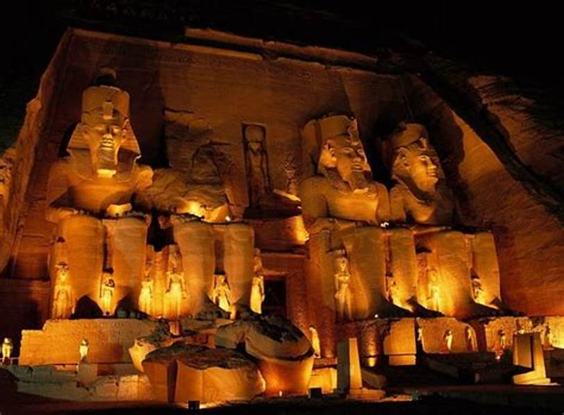

Nestled on the banks of Lake Nasser in southern Egypt, the Abu Simbel Temple is more than just a historical site — it’s a breathtaking journey into the heart of ancient Egyptian civilization. Built over 3,000 years ago by the great Pharaoh Ramses II, this temple is a powerful symbol of strength, spirituality, and architectural brilliance.
Walking up to the temple, you’re immediately struck by the towering statues of Ramses himself, carved directly into the rock. Each figure stands over 20 meters tall, staring out across the desert with a silent majesty that feels both ancient and eternal. It’s hard not to feel small in the presence of such grandeur.
But Abu Simbel is more than just a stunning sight. Twice a year — on February 22 and October 22 — something truly magical happens: the rising sun shines directly into the temple’s inner sanctuary, lighting up the statues of Ramses and the gods seated beside him. This precise alignment, achieved thousands of years ago without modern tools, continues to amaze scientists and visitors alike.
Perhaps one of the most incredible parts of the temple’s story is how it was saved. In the 1960s, as the Aswan High Dam was being built, rising waters from the Nile threatened to submerge Abu Simbel forever. In a massive international effort led by UNESCO, the entire temple was cut into blocks and moved to higher ground — an extraordinary feat of engineering that preserved this masterpiece for future generations.
Visiting Abu Simbel isn’t just about seeing a temple; it’s about stepping into a story — one of ambition, faith, science, and preservation. Whether you're a history lover, a traveler, or someone simply in search of wonder, Abu Simbel will leave you speechless.
Discover the Timeless Wonder of Abu Simbel Temple





